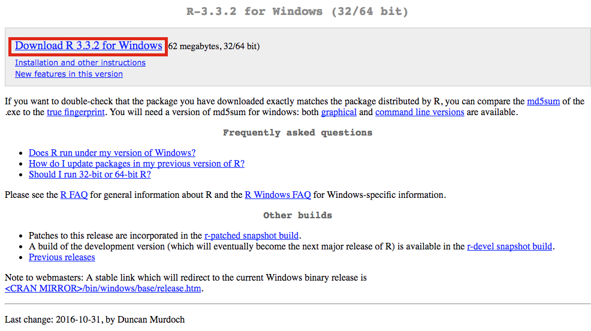

<!DOCTYPE html>
<html lang="" xml:lang="">
<head>

  <meta charset="utf-8" />
  <meta http-equiv="X-UA-Compatible" content="IE=edge" />
  <title>Chapter 2 Basic Data analysis | Applied Epidemiology in One Health Research</title>
  <meta name="description" content="Chapter 2 Basic Data analysis | Applied Epidemiology in One Health Research" />
  <meta name="generator" content="bookdown 0.21.5 and GitBook 2.6.7" />

  <meta property="og:title" content="Chapter 2 Basic Data analysis | Applied Epidemiology in One Health Research" />
  <meta property="og:type" content="book" />
  
  
  
  

  <meta name="twitter:card" content="summary" />
  <meta name="twitter:title" content="Chapter 2 Basic Data analysis | Applied Epidemiology in One Health Research" />
  
  
  

<meta name="author" content="Author: Nguyễn Thanh Lương" />


  <meta name="viewport" content="width=device-width, initial-scale=1" />
  <meta name="apple-mobile-web-app-capable" content="yes" />
  <meta name="apple-mobile-web-app-status-bar-style" content="black" />
  
  
<link rel="prev" href="index.html"/>
<link rel="next" href="regression-models.html"/>
<script src="libs/header-attrs-2.6.4/header-attrs.js"></script>
<script src="libs/jquery-2.2.3/jquery.min.js"></script>
<link href="libs/gitbook-2.6.7/css/style.css" rel="stylesheet" />
<link href="libs/gitbook-2.6.7/css/plugin-table.css" rel="stylesheet" />
<link href="libs/gitbook-2.6.7/css/plugin-bookdown.css" rel="stylesheet" />
<link href="libs/gitbook-2.6.7/css/plugin-highlight.css" rel="stylesheet" />
<link href="libs/gitbook-2.6.7/css/plugin-search.css" rel="stylesheet" />
<link href="libs/gitbook-2.6.7/css/plugin-fontsettings.css" rel="stylesheet" />
<link href="libs/gitbook-2.6.7/css/plugin-clipboard.css" rel="stylesheet" />


<link href="libs/anchor-sections-1.0.1/anchor-sections.css" rel="stylesheet" />
<script src="libs/anchor-sections-1.0.1/anchor-sections.js"></script>
<html lang="en-us">
<head> <meta charset="utf-8">
</head>
<body>
<script src="highlight.js"></script>
<script>hljs.initHighlightingOnLoad();</script>
</body>

</html>


<style type="text/css">
pre > code.sourceCode { white-space: pre; position: relative; }
pre > code.sourceCode > span { display: inline-block; line-height: 1.25; }
pre > code.sourceCode > span:empty { height: 1.2em; }
.sourceCode { overflow: visible; }
code.sourceCode > span { color: inherit; text-decoration: inherit; }
pre.sourceCode { margin: 0; }
@media screen {
div.sourceCode { overflow: auto; }
}
@media print {
pre > code.sourceCode { white-space: pre-wrap; }
pre > code.sourceCode > span { text-indent: -5em; padding-left: 5em; }
}
pre.numberSource code
  { counter-reset: source-line 0; }
pre.numberSource code > span
  { position: relative; left: -4em; counter-increment: source-line; }
pre.numberSource code > span > a:first-child::before
  { content: counter(source-line);
    position: relative; left: -1em; text-align: right; vertical-align: baseline;
    border: none; display: inline-block;
    -webkit-touch-callout: none; -webkit-user-select: none;
    -khtml-user-select: none; -moz-user-select: none;
    -ms-user-select: none; user-select: none;
    padding: 0 4px; width: 4em;
    color: #aaaaaa;
  }
pre.numberSource { margin-left: 3em; border-left: 1px solid #aaaaaa;  padding-left: 4px; }
div.sourceCode
  {   }
@media screen {
pre > code.sourceCode > span > a:first-child::before { text-decoration: underline; }
}
code span.al { color: #ff0000; font-weight: bold; } /* Alert */
code span.an { color: #60a0b0; font-weight: bold; font-style: italic; } /* Annotation */
code span.at { color: #7d9029; } /* Attribute */
code span.bn { color: #40a070; } /* BaseN */
code span.bu { } /* BuiltIn */
code span.cf { color: #007020; font-weight: bold; } /* ControlFlow */
code span.ch { color: #4070a0; } /* Char */
code span.cn { color: #880000; } /* Constant */
code span.co { color: #60a0b0; font-style: italic; } /* Comment */
code span.cv { color: #60a0b0; font-weight: bold; font-style: italic; } /* CommentVar */
code span.do { color: #ba2121; font-style: italic; } /* Documentation */
code span.dt { color: #902000; } /* DataType */
code span.dv { color: #40a070; } /* DecVal */
code span.er { color: #ff0000; font-weight: bold; } /* Error */
code span.ex { } /* Extension */
code span.fl { color: #40a070; } /* Float */
code span.fu { color: #06287e; } /* Function */
code span.im { } /* Import */
code span.in { color: #60a0b0; font-weight: bold; font-style: italic; } /* Information */
code span.kw { color: #007020; font-weight: bold; } /* Keyword */
code span.op { color: #666666; } /* Operator */
code span.ot { color: #007020; } /* Other */
code span.pp { color: #bc7a00; } /* Preprocessor */
code span.sc { color: #4070a0; } /* SpecialChar */
code span.ss { color: #bb6688; } /* SpecialString */
code span.st { color: #4070a0; } /* String */
code span.va { color: #19177c; } /* Variable */
code span.vs { color: #4070a0; } /* VerbatimString */
code span.wa { color: #60a0b0; font-weight: bold; font-style: italic; } /* Warning */
</style>

<link rel="stylesheet" href="style-bookdown.css" type="text/css" />
</head>

<body>


  <div class="book without-animation with-summary font-size-2 font-family-1" data-basepath=".">

    <div class="book-summary">
      <nav role="navigation">

<ul class="summary">
<li class="chapter" data-level="1" data-path="index.html"><a href="index.html"><i class="fa fa-check"></i><b>1</b> Basic Epidemiology</a>
<ul>
<li class="chapter" data-level="1.1" data-path="index.html"><a href="index.html#causual-concept"><i class="fa fa-check"></i><b>1.1</b> Causual concept</a></li>
<li class="chapter" data-level="1.2" data-path="index.html"><a href="index.html#sampling"><i class="fa fa-check"></i><b>1.2</b> Sampling</a></li>
<li class="chapter" data-level="1.3" data-path="index.html"><a href="index.html#measures-of-diseases-frequency"><i class="fa fa-check"></i><b>1.3</b> Measures of diseases frequency</a></li>
<li class="chapter" data-level="1.4" data-path="index.html"><a href="index.html#measures-of-association"><i class="fa fa-check"></i><b>1.4</b> Measures of association</a></li>
<li class="chapter" data-level="1.5" data-path="index.html"><a href="index.html#introduction-about-different-studies-design"><i class="fa fa-check"></i><b>1.5</b> Introduction about different studies design</a>
<ul>
<li class="chapter" data-level="1.5.1" data-path="index.html"><a href="index.html#introduction-about-observational-study"><i class="fa fa-check"></i><b>1.5.1</b> Introduction about observational study</a></li>
<li class="chapter" data-level="1.5.2" data-path="index.html"><a href="index.html#introduction-about-longitudinal-study"><i class="fa fa-check"></i><b>1.5.2</b> Introduction about longitudinal study</a></li>
<li class="chapter" data-level="1.5.3" data-path="index.html"><a href="index.html#controlled-trials"><i class="fa fa-check"></i><b>1.5.3</b> Controlled trials</a></li>
</ul></li>
<li class="chapter" data-level="1.6" data-path="index.html"><a href="index.html#confounder-bias"><i class="fa fa-check"></i><b>1.6</b> Confounder bias</a></li>
</ul></li>
<li class="chapter" data-level="2" data-path="basic-data-analysis.html"><a href="basic-data-analysis.html"><i class="fa fa-check"></i><b>2</b> Basic Data analysis</a>
<ul>
<li class="chapter" data-level="2.1" data-path="basic-data-analysis.html"><a href="basic-data-analysis.html#introduction-about-work-flow"><i class="fa fa-check"></i><b>2.1</b> Introduction about work flow</a></li>
<li class="chapter" data-level="2.2" data-path="basic-data-analysis.html"><a href="basic-data-analysis.html#software-installation"><i class="fa fa-check"></i><b>2.2</b> Software installation</a>
<ul>
<li class="chapter" data-level="2.2.1" data-path="basic-data-analysis.html"><a href="basic-data-analysis.html#r"><i class="fa fa-check"></i><b>2.2.1</b> R</a></li>
<li class="chapter" data-level="2.2.2" data-path="basic-data-analysis.html"><a href="basic-data-analysis.html#rstudio"><i class="fa fa-check"></i><b>2.2.2</b> Rstudio</a></li>
<li class="chapter" data-level="2.2.3" data-path="basic-data-analysis.html"><a href="basic-data-analysis.html#python"><i class="fa fa-check"></i><b>2.2.3</b> Python</a></li>
<li class="chapter" data-level="2.2.4" data-path="basic-data-analysis.html"><a href="basic-data-analysis.html#setting-environment-for-r-and-python"><i class="fa fa-check"></i><b>2.2.4</b> Setting environment for R and Python</a></li>
<li class="chapter" data-level="2.2.5" data-path="basic-data-analysis.html"><a href="basic-data-analysis.html#stata"><i class="fa fa-check"></i><b>2.2.5</b> STATA</a></li>
</ul></li>
<li class="chapter" data-level="2.3" data-path="basic-data-analysis.html"><a href="basic-data-analysis.html#create-working-environment"><i class="fa fa-check"></i><b>2.3</b> Create working environment</a></li>
<li class="chapter" data-level="2.4" data-path="basic-data-analysis.html"><a href="basic-data-analysis.html#data-manipulation"><i class="fa fa-check"></i><b>2.4</b> Data Manipulation</a></li>
<li class="chapter" data-level="2.5" data-path="basic-data-analysis.html"><a href="basic-data-analysis.html#data-visualization"><i class="fa fa-check"></i><b>2.5</b> Data visualization</a></li>
<li class="chapter" data-level="2.6" data-path="basic-data-analysis.html"><a href="basic-data-analysis.html#communication-with-rmarkdown"><i class="fa fa-check"></i><b>2.6</b> Communication with Rmarkdown</a></li>
<li class="chapter" data-level="2.7" data-path="basic-data-analysis.html"><a href="basic-data-analysis.html#shinyapp"><i class="fa fa-check"></i><b>2.7</b> ShinyApp</a></li>
</ul></li>
<li class="chapter" data-level="3" data-path="regression-models.html"><a href="regression-models.html"><i class="fa fa-check"></i><b>3</b> Regression models</a></li>
<li class="chapter" data-level="4" data-path="risk-analysis.html"><a href="risk-analysis.html"><i class="fa fa-check"></i><b>4</b> Risk analysis</a>
<ul>
<li class="chapter" data-level="4.1" data-path="risk-analysis.html"><a href="risk-analysis.html#introduction-about-risk-analysis"><i class="fa fa-check"></i><b>4.1</b> Introduction about risk analysis</a></li>
<li class="chapter" data-level="4.2" data-path="risk-analysis.html"><a href="risk-analysis.html#quantitative-microbial-risk-assessment"><i class="fa fa-check"></i><b>4.2</b> Quantitative Microbial Risk Assessment</a></li>
</ul></li>
<li class="chapter" data-level="5" data-path="spatial-epidemiology.html"><a href="spatial-epidemiology.html"><i class="fa fa-check"></i><b>5</b> Spatial Epidemiology</a>
<ul>
<li class="chapter" data-level="5.1" data-path="spatial-epidemiology.html"><a href="spatial-epidemiology.html#introduction-about-qgis"><i class="fa fa-check"></i><b>5.1</b> Introduction about QGIS</a></li>
<li class="chapter" data-level="5.2" data-path="spatial-epidemiology.html"><a href="spatial-epidemiology.html#spatial-epidemiology-1"><i class="fa fa-check"></i><b>5.2</b> Spatial Epidemiology</a></li>
</ul></li>
<li class="chapter" data-level="6" data-path="estimating-true-prevalence-of-diseases.html"><a href="estimating-true-prevalence-of-diseases.html"><i class="fa fa-check"></i><b>6</b> Estimating true prevalence of diseases</a>
<ul>
<li class="chapter" data-level="6.1" data-path="estimating-true-prevalence-of-diseases.html"><a href="estimating-true-prevalence-of-diseases.html#se-and-sp-estimations-using-logistic-regression"><i class="fa fa-check"></i><b>6.1</b> Se and Sp estimations using logistic regression</a></li>
<li class="chapter" data-level="6.2" data-path="estimating-true-prevalence-of-diseases.html"><a href="estimating-true-prevalence-of-diseases.html#estimating-true-prevalence-without-a-gold-standard"><i class="fa fa-check"></i><b>6.2</b> Estimating true prevalence without a gold standard</a></li>
</ul></li>
<li class="chapter" data-level="7" data-path="infectious-diseases-modelling.html"><a href="infectious-diseases-modelling.html"><i class="fa fa-check"></i><b>7</b> Infectious Diseases Modelling</a>
<ul>
<li class="chapter" data-level="7.1" data-path="infectious-diseases-modelling.html"><a href="infectious-diseases-modelling.html#introduction-about-compartmental-model"><i class="fa fa-check"></i><b>7.1</b> Introduction about compartmental model</a></li>
<li class="chapter" data-level="7.2" data-path="infectious-diseases-modelling.html"><a href="infectious-diseases-modelling.html#introduction-about-system-dynamic-modelling"><i class="fa fa-check"></i><b>7.2</b> Introduction about system dynamic modelling</a></li>
</ul></li>
<li class="chapter" data-level="8" data-path="other-models.html"><a href="other-models.html"><i class="fa fa-check"></i><b>8</b> Other models</a>
<ul>
<li class="chapter" data-level="8.1" data-path="other-models.html"><a href="other-models.html#structure-equation-modelling"><i class="fa fa-check"></i><b>8.1</b> Structure Equation Modelling</a></li>
<li class="chapter" data-level="8.2" data-path="other-models.html"><a href="other-models.html#network-analysis"><i class="fa fa-check"></i><b>8.2</b> Network analysis</a></li>
</ul></li>
<li class="chapter" data-level="9" data-path="other-tools.html"><a href="other-tools.html"><i class="fa fa-check"></i><b>9</b> Other tools</a>
<ul>
<li class="chapter" data-level="9.1" data-path="other-tools.html"><a href="other-tools.html#digital-data-collection"><i class="fa fa-check"></i><b>9.1</b> Digital data collection</a></li>
<li class="chapter" data-level="9.2" data-path="other-tools.html"><a href="other-tools.html#powerbi"><i class="fa fa-check"></i><b>9.2</b> PowerBI</a></li>
<li class="chapter" data-level="9.3" data-path="other-tools.html"><a href="other-tools.html#tableau"><i class="fa fa-check"></i><b>9.3</b> Tableau</a></li>
</ul></li>
<li class="divider"></li>
<li><a href="https://www.facebook.com/ntluong95/" target="blank">Visit me</a></li>

</ul>

      </nav>
    </div>

    <div class="book-body">
      <div class="body-inner">
        <div class="book-header" role="navigation">
          <h1>
            <i class="fa fa-circle-o-notch fa-spin"></i><a href="./">Applied Epidemiology in One Health Research</a>
          </h1>
        </div>

        <div class="page-wrapper" tabindex="-1" role="main">
          <div class="page-inner">

            <section class="normal" id="section-">
<div id="basic-data-analysis" class="section level1" number="2">
<h1><span class="header-section-number">Chapter 2</span> Basic Data analysis</h1>
<div id="introduction-about-work-flow" class="section level2" number="2.1">
<h2><span class="header-section-number">2.1</span> Introduction about work flow</h2>
<p>The picture below described about a normal working process of data analysis.</p>
<p>First you must <strong>import</strong> your data. This typically means that you take data stored in a file, database, or web application programming interface (API), and load it into the software. In this course, we will work with <em>.xlsx</em> and <em>.csv</em> file, which are the most common type of storaging data.</p>
<center>
<div class="figure">

<p class="caption">Source: R for Data Science book</p>
</div>
</center>
<p>The next steps are <strong>Tidying</strong> and <strong>Transforming</strong> your data. Combining 2 steps, we have the so-called <strong>Data Wrangling.</strong> Tidying your data means storing it in a consistent form that matches the semantics of the dataset with the way it is stored. In brief, when your data is tidy, each column is a variable, and each row is an observation. Once you have tidy data, a common first step is to transform it. Transformation includes narrowing in on observations of interest, creating new variables that are functions of existing variables, and calculating a set of summary statistics (like counts or means).</p>
<p><strong>Visualization</strong> is a fundamentally human activity. A good visualization will show you things that you did not expect, or raise new questions about the data. A good visualization might also hint that you’re asking the wrong question, or you need to collect different data. Visualizations can surprise you, but don’t scale particularly well because they require a human to interpret them.</p>
<p><strong>Models</strong> are complementary tools to visualization. Once you have made your questions sufficiently precise, you can use a model to answer them. Models are a fundamentally mathematical or computational tool, so they generally scale well. But every model makes assumptions, and by its very nature a model cannot question its own assumptions. That means a model cannot fundamentally surprise you.</p>
<p>The last step of data science is <strong>Communication</strong>, an absolutely critical part of any data analysis project. It doesn’t matter how well your models and visualization have led you to understand the data unless you can also communicate your results to others.</p>
</div>
<div id="software-installation" class="section level2" number="2.2">
<h2><span class="header-section-number">2.2</span> Software installation</h2>
<p>In this course, I will introduce you about the three most powerful statistical softwares including R, Python and STATA, their usage and their advantages as well as disadvantages. While R and Python is more a programming language, which can be a hurdle for some people, STATA is more user-friendly and balance between using Graphical User Interface (GUI) and saving script (<em>do file</em>). In short, you’ll need to install the following programs in order:</p>
<ul>
<li><p><strong>R</strong>: A statistical programming language used to wrangle, analyze, and visualize data (<a href="https://cran.r-project.org/bin/macosx/">mac</a>, <a href="https://cran.r-project.org/bin/windows/base/">windows</a>)</p></li>
<li><p><strong>RStudio</strong>: An interface for writing and running R code, which is a primary language for the quarter (<a href="https://www.rstudio.com/products/rstudio/download/">link)</a>. You can download a developing version <a href="https://dailies.rstudio.com/">here</a>, which will provide most up-to-date new features</p></li>
<li><p><strong>Python</strong>: Another programming language, be preferred in machine learning, deep learning, AI. In this tutorial, we will install Python indirectly through package <em>reticulate</em> in R. More details will be presented later</p></li>
<li><p><strong>Git</strong>: (Optional) A set of command-line tools for tracking changes to a project. This is likely already installed on Macs. The Windows download will come with Git Bash, a simple interface for executing Git commands (<a href="https://git-scm.com/downloads">link</a>)</p></li>
<li><p><strong>STATA</strong>: This is paid software. You have to buy it before use or you can download a trial version <a href="https://www.stata.com/customer-service/evaluate-stata/">here</a></p></li>
</ul>
<p>The following sections have additional information about the purpose of each component, how to install it, and alternative configurations.</p>
<div id="r" class="section level3" number="2.2.1">
<h3><span class="header-section-number">2.2.1</span> R</h3>
<p>R is a popular data science language used to download, analyze, and visualize data. You can download it at the appropriate link for your operating system (<a href="https://cran.r-project.org/bin/macosx/">mac</a>, <a href="https://cran.r-project.org/bin/windows/base/">windows</a>). At the link, click the appropriate download link and follow instructions:</p>
<center>
<p></p>
</center>
<p>To install package in R, type the following code to the console. For instance, you want to install <code>tidyverse</code> package</p>
<div class="sourceCode" id="cb1"><pre class="sourceCode r"><code class="sourceCode r"><span id="cb1-1"><a href="basic-data-analysis.html#cb1-1" aria-hidden="true" tabindex="-1"></a><span class="fu">install.packages</span>(<span class="st">&quot;tidyverse&quot;</span>)</span></code></pre></div>
<p>To call <code>tidyverse</code> package</p>
<div class="sourceCode" id="cb2"><pre class="sourceCode r"><code class="sourceCode r"><span id="cb2-1"><a href="basic-data-analysis.html#cb2-1" aria-hidden="true" tabindex="-1"></a><span class="fu">library</span>(tidyverse)</span></code></pre></div>
</div>
<div id="rstudio" class="section level3" number="2.2.2">
<h3><span class="header-section-number">2.2.2</span> Rstudio</h3>
<p>The primary programming language we will use throughout the course is R. It’s a very powerful statistical programming language that is built to work well with large and diverse datasets. While you are able to execute R scripts without an interface, the RStudio interface provides a wonderful way to engage with the R language. Importantly, you <strong>cannot use the RStudio interface until you have installed R.</strong></p>
<p>To download the RStudio program, select the installer for your operating system at this <a href="https://rstudio.com/products/rstudio/download/">link</a>. Make sure to scroll down to download a <strong>free</strong> version of RStudio:</p>
<center>
<p></p>
</center>
</div>
<div id="python" class="section level3" number="2.2.3">
<h3><span class="header-section-number">2.2.3</span> Python</h3>
<p>Python is a very popular all-purpose programming language that is making a major impact in the data-science arena. Some data scientists, and even some organizations, believe they have to pick between R or Python. However, this turns out to be a false choice. In fact, results from a surveys showed that many data science teams today are bilingual, leveraging both R and Python in their work. And while both languages have unique strengths, these teams frequently struggle to use them together.</p>
<p>Rstudio provides a prefect environment for data scientist through a package reticulate. Rstudio can be a potentially platform for data scientist who are using solely R or Python, or using both</p>
</div>
<div id="setting-environment-for-r-and-python" class="section level3" number="2.2.4">
<h3><span class="header-section-number">2.2.4</span> Setting environment for R and Python</h3>
<p>Firstly, you have to install reticulate package:</p>
<div class="sourceCode" id="cb3"><pre class="sourceCode r"><code class="sourceCode r"><span id="cb3-1"><a href="basic-data-analysis.html#cb3-1" aria-hidden="true" tabindex="-1"></a><span class="fu">install.packages</span>(<span class="st">&quot;reticulate&quot;</span>)</span></code></pre></div>
<p>Secondly, install the miniconda environment. I suggest you should install miniconda in your local disk, not your OS disk (i.e Disk C)</p>
<div class="sourceCode" id="cb4"><pre class="sourceCode r"><code class="sourceCode r"><span id="cb4-1"><a href="basic-data-analysis.html#cb4-1" aria-hidden="true" tabindex="-1"></a>reticulate<span class="sc">::</span><span class="fu">install_miniconda</span>(<span class="st">&quot;D:/Python&quot;</span>)</span>
<span id="cb4-2"><a href="basic-data-analysis.html#cb4-2" aria-hidden="true" tabindex="-1"></a>reticulate<span class="sc">::</span><span class="fu">use_condaenv</span>(<span class="st">&quot;D:/Python/envs/r-reticulate&quot;</span>)</span></code></pre></div>
<p>Thirdly, try to install Python package. There are two ways to do it, Reticulate style and Python style
<strong>Reticulate</strong> style</p>
<div class="sourceCode" id="cb5"><pre class="sourceCode r"><code class="sourceCode r"><span id="cb5-1"><a href="basic-data-analysis.html#cb5-1" aria-hidden="true" tabindex="-1"></a><span class="fu">library</span>(reticulate)</span>
<span id="cb5-2"><a href="basic-data-analysis.html#cb5-2" aria-hidden="true" tabindex="-1"></a><span class="fu">py_install</span>(<span class="st">&quot;pandas&quot;</span>) </span>
<span id="cb5-3"><a href="basic-data-analysis.html#cb5-3" aria-hidden="true" tabindex="-1"></a><span class="fu">py_install</span>(<span class="st">&quot;matplotlib&quot;</span>)</span></code></pre></div>
<p><strong>Python</strong> style
Set Python PATH through Terminal. You copy this code and paste into Terminal console in your Rstudio:
<code>setx PATH "%PATH%;D:\Python\envs\r-reticulate\Scripts"</code><br />
Then try to run this code to install pandas package:
<code>python -m pip install pandas</code></p>
</div>
<div id="stata" class="section level3" number="2.2.5">
<h3><span class="header-section-number">2.2.5</span> STATA</h3>
<p>This is paid software. You have to buy it before use or you can download a trial version <a href="https://www.stata.com/customer-service/evaluate-stata/">here</a></p>
<p>If you want to use STATA in Rstudio, you can do it through <code>statamarkdown</code> package. Detail will be dicussed further in this document.</p>
<div class="sourceCode" id="cb6"><pre class="sourceCode r"><code class="sourceCode r"><span id="cb6-1"><a href="basic-data-analysis.html#cb6-1" aria-hidden="true" tabindex="-1"></a><span class="fu">install.packages</span>(<span class="st">&quot;Statamarkdown&quot;</span>)</span>
<span id="cb6-2"><a href="basic-data-analysis.html#cb6-2" aria-hidden="true" tabindex="-1"></a><span class="fu">library</span>(Statamarkdown)</span>
<span id="cb6-3"><a href="basic-data-analysis.html#cb6-3" aria-hidden="true" tabindex="-1"></a>stataexe <span class="ot">&lt;-</span> <span class="st">&quot;C:/Program Files/Stata16/StataSE-64.exe&quot;</span></span>
<span id="cb6-4"><a href="basic-data-analysis.html#cb6-4" aria-hidden="true" tabindex="-1"></a>knitr<span class="sc">::</span>opts_chunk<span class="sc">$</span><span class="fu">set</span>(<span class="at">engine.path=</span><span class="fu">list</span>(<span class="at">stata=</span>stataexe))</span></code></pre></div>
</div>
</div>
<div id="create-working-environment" class="section level2" number="2.3">
<h2><span class="header-section-number">2.3</span> Create working environment</h2>
<p>Git is a version control system that provides a set of commands that allow you to manage changes to a project (much more on this in <a href="https://github.com/info-201/m3-version-control">module-3</a>). For now, you’ll need to <a href="https://git-scm.com/downloads">download</a> and install the software. Note, if you are using a Windows machine, this will install a program called Git Bash, which provides a text-based interface for executing commands on your computer. To setup Git in your Rstudio, you can visit this <a href="https://www.geo.uzh.ch/microsite/reproducible_research/post/rr-rstudio-git/">link</a>.</p>
<p>For alternative/additional Windows command-line tools, see below:</p>
<p><strong>Git Bash</strong></p>
<p>Because we’ll primarily use the command line for implementing version control (i.e., keeping track of changes to our code), we can use a command-line tool that ships with the version control software, Git. When you download the <a href="https://git-scm.com/downloads">Git</a> software on Windows, the Git Bash user-interface will be installed. You can then navigate to Git Bash from your Desktop / Start Menu, and you will be able to use the appropriate syntax to keep track of code changes.</p>
<p><strong>Windows Bash</strong></p>
<p>With the release of Windows 10, Windows began providing command line (bash) support. If you already have Windows 10, here are a few <a href="http://www.howtogeek.com/249966/how-to-install-and-use-the-linux-bash-shell-on-windows-10/">instructions</a> for installing bash capabilities. This requires that you <a href="http://www.howtogeek.com/228042/how-to-switch-from-32-bit-windows-10-to-64-bit-windows-10/">switch to 64 bit windows</a>, and follow the instructions above. While this will provide you with direct bash capabilities, you may run into challenges along the way (I have not tested these instructions). Note, you will still <strong>need to install Git</strong> in addition to Windows Bash.</p>
<p><strong>Powershell (Windows Management Framework)</strong></p>
<p>If you want to explore more robust command-line alternatives for Windows, the Windows Management Framework (including a program called Powershell) seems to be a preferred standard. Powershell will provide a simple text-based interface for inputing commands. Note, you will still <strong>need to install Git</strong> in addition to Powershell.</p>
</div>
<div id="data-manipulation" class="section level2" number="2.4">
<h2><span class="header-section-number">2.4</span> Data Manipulation</h2>
</div>
<div id="data-visualization" class="section level2" number="2.5">
<h2><span class="header-section-number">2.5</span> Data visualization</h2>
</div>
<div id="communication-with-rmarkdown" class="section level2" number="2.6">
<h2><span class="header-section-number">2.6</span> Communication with Rmarkdown</h2>
</div>
<div id="shinyapp" class="section level2" number="2.7">
<h2><span class="header-section-number">2.7</span> ShinyApp</h2>

</div>
</div>
            </section>

          </div>
        </div>
      </div>
<a href="index.html" class="navigation navigation-prev " aria-label="Previous page"><i class="fa fa-angle-left"></i></a>
<a href="regression-models.html" class="navigation navigation-next " aria-label="Next page"><i class="fa fa-angle-right"></i></a>
    </div>
  </div>
<script src="libs/gitbook-2.6.7/js/app.min.js"></script>
<script src="libs/gitbook-2.6.7/js/lunr.js"></script>
<script src="libs/gitbook-2.6.7/js/clipboard.min.js"></script>
<script src="libs/gitbook-2.6.7/js/plugin-search.js"></script>
<script src="libs/gitbook-2.6.7/js/plugin-sharing.js"></script>
<script src="libs/gitbook-2.6.7/js/plugin-fontsettings.js"></script>
<script src="libs/gitbook-2.6.7/js/plugin-bookdown.js"></script>
<script src="libs/gitbook-2.6.7/js/jquery.highlight.js"></script>
<script src="libs/gitbook-2.6.7/js/plugin-clipboard.js"></script>
<script>
gitbook.require(["gitbook"], function(gitbook) {
gitbook.start({
"sharing": {
"github": false,
"facebook": true,
"twitter": true,
"linkedin": false,
"weibo": false,
"instapaper": false,
"vk": false,
"all": ["facebook", "twitter", "linkedin", "weibo", "instapaper"]
},
"fontsettings": {
"theme": "white",
"family": "sans",
"size": 2
},
"edit": {
"link": "https://github.com/ntluong95/one-health/edit/master/02-introduction.Rmd",
"text": "Edit"
},
"history": {
"link": null,
"text": null
},
"view": {
"link": "https://github.com/ntluong95/one-health/blob/master/02-introduction.Rmd",
"text": null
},
"download": null,
"toc": {
"collapse": "subsection",
"scroll_highlight": true
},
"toc_float": true
});
});
</script>

</body>

</html>
